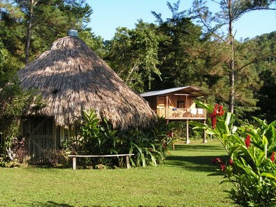

My first big trip at HOLA was to Guatemala. The year after this trip we went to Costa Rica. At the time I was 12-13. Now, 10+ years later, they run together. These are some of the memories of those trips:
Two of my friends were Yanira and Adriana. Once we got settled in our hotel in Costa Rica one of the girls told the main female teacher, Laura, that she was having cramps and asked for some medication. Laura passed this on to Dan, Laura's husband and the main male teacher. He went out to the local Farmacia to pick up some medicine for her. When he got back he proceeded to give her a bottle of medicated lice shampoo and told her that we would have to boil her clothing to get rid of the lice. She was very confused since she did not have lice, or as Laura heard it, 'crabs'. Hilarity ensued. Some of the best times during our trips were when we could laugh at each other. Dan and Laura were both very relieved that she did not have crabs. This is what happens when you get a real life game of telephone going.
In Guatemala we stayed at a cool Euro style resort called The Finca Ixobel. We stayed in what they called a 'champa' which was basically just a hut that you hung hammocks in. The kids and one adult slept in two of these huts, girls in one, boys in the other. The Finca Ixobel had an outdoor dancing/bar area, an indoor/outdoor kitchen, lounging areas, and a fenced in area where a few monkeys lived. One morning I woke up in my hammock in the champa, looked up, and was met with the surprising sight of a monkey! One of the monkeys from the enclosure had broken out and decided to come hang out with us. It was pretty friendly and let us pet it, that is until a little later in the morning. One of the kids from HOLA was standing in the doorway looking at a Pokemon guide magazine (priorities, am I right?). Apparently the monkey decided that he had had enough of our champa and did not want to be kept in by this kid who was bout his same size. He jumped on the kid's back and bit his ear. The kid was more than a little surprised and started crying and screaming. The monkey, having removed his obstacle, jumped down and ran off. It was a exciting day! Also, don't mess with monkeys.